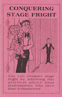

Feelings of Apprehension?
2/18/2010
By Col. Bill Boley
One of the first steps in overcoming stage fright is to remember that all vents get butterflies in their stomach just before they perform. I have performed over 4,000 times in the past 20 years and I still feel some apprehension before every performance. I'm not alone. Several years ago I went to see Edgar Bergen perform and after his performance, one of the things we talked about was stage fright. The old master vent himself said he still felt butterflies just before each performance.
The main secret of reducing such feelings is to get your mind off yourself and direct your energies to your performance. Here are a few things that will help reduce stage fright and apprehension:
1) Be sure you know your vent routine well. Go through the routine in practice over and over again. Practice, practice, practice. Get some of your family to watch and listen to you as you practice.
2) If possible, use a routine that you have used in front of a live audience several times before.
3) Start your act off with jokes that you know have been getting laughs.
4) Pick a friend or relative in the audience and perform to them. If you have no friends or relatives in the audience then pick out a friendly face.
5) Be friendly and smile at your audience and let them know that you are enjoying what you are doing.
6) Sometimes it helps to "ham it up". Just a little. Over act just a bit - just don't overdo it.
* * * * * *
Taken from the chapter Overcoming Stage Fright by Col. Bill Boley in the book, Conquering Stage Fright, published and copyright 1980 by Maher Ventriloquist Studios. One copy of this book will be awarded free tomorrow.
Also for sale: $5.00 postpaid.
Contact Mr. D
One of the first steps in overcoming stage fright is to remember that all vents get butterflies in their stomach just before they perform. I have performed over 4,000 times in the past 20 years and I still feel some apprehension before every performance. I'm not alone. Several years ago I went to see Edgar Bergen perform and after his performance, one of the things we talked about was stage fright. The old master vent himself said he still felt butterflies just before each performance.
The main secret of reducing such feelings is to get your mind off yourself and direct your energies to your performance. Here are a few things that will help reduce stage fright and apprehension:
1) Be sure you know your vent routine well. Go through the routine in practice over and over again. Practice, practice, practice. Get some of your family to watch and listen to you as you practice.
2) If possible, use a routine that you have used in front of a live audience several times before.
3) Start your act off with jokes that you know have been getting laughs.
4) Pick a friend or relative in the audience and perform to them. If you have no friends or relatives in the audience then pick out a friendly face.
5) Be friendly and smile at your audience and let them know that you are enjoying what you are doing.
{kind=link}

6) Sometimes it helps to "ham it up". Just a little. Over act just a bit - just don't overdo it.
* * * * * *
Taken from the chapter Overcoming Stage Fright by Col. Bill Boley in the book, Conquering Stage Fright, published and copyright 1980 by Maher Ventriloquist Studios. One copy of this book will be awarded free tomorrow.
Also for sale: $5.00 postpaid.
Contact Mr. D